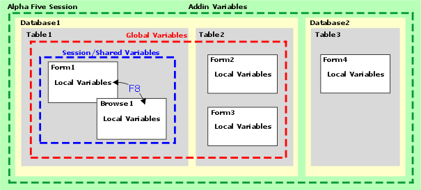
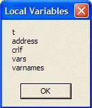

LOCAL_VARIABLES()
Syntax
Description
The LOCAL_VARIABLES() function returns a pointer to the collection of variables local to the layout or function.

Example
The following example shows the variables local to the Interactive window.
|
dim a as C dim b as N a = "alpha" b = 12 ? local_variables() = a = "alpha" b = 12.000000 |
This example responds to the OnPush event of a button and reports on the local variables for the form.
|
dim vars as P dim varnames as C vars = local_variables() varnames = properties_enum(vars) ui_msg_box("Local Variables", varnames) |
The result is:

See Also
What is a Variable?, Variable Data Types and Scope, Variable Functions and Methods